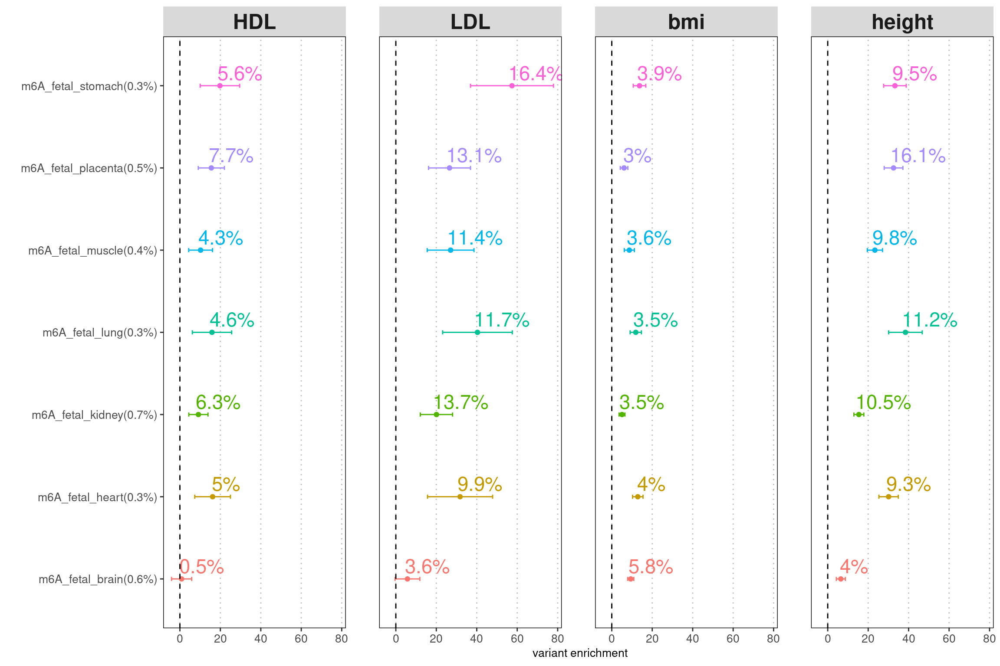
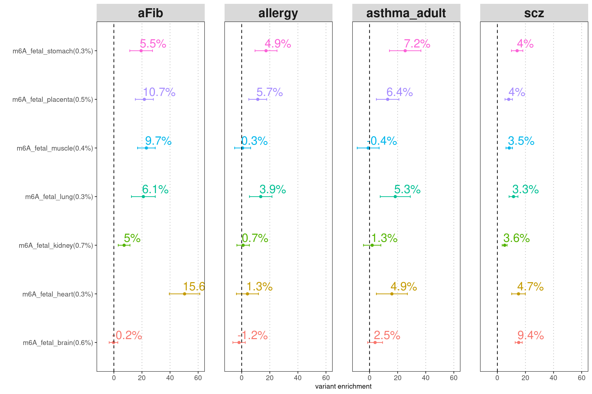
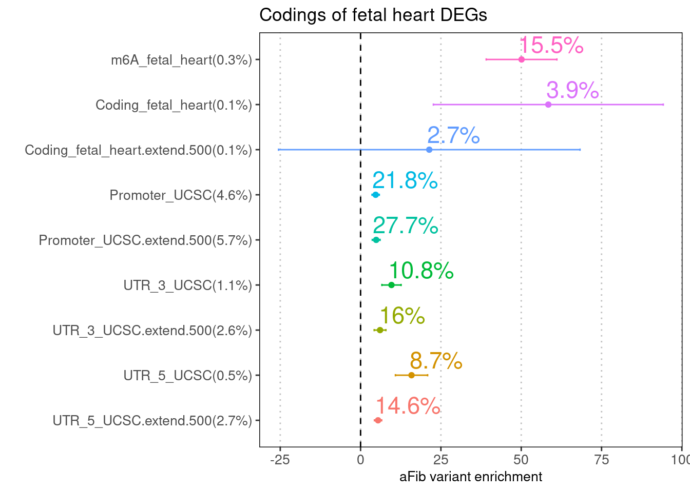

Last updated: 2022-09-30
Checks: 6 1
Knit directory: funcFinemapping/
This reproducible R Markdown analysis was created with workflowr (version 1.7.0). The Checks tab describes the reproducibility checks that were applied when the results were created. The Past versions tab lists the development history.
The R Markdown is untracked by Git. To know which version of the R
Markdown file created these results, you’ll want to first commit it to
the Git repo. If you’re still working on the analysis, you can ignore
this warning. When you’re finished, you can run
wflow_publish to commit the R Markdown file and build the
HTML.
Great job! The global environment was empty. Objects defined in the global environment can affect the analysis in your R Markdown file in unknown ways. For reproduciblity it’s best to always run the code in an empty environment.
The command set.seed(20210404) was run prior to running
the code in the R Markdown file. Setting a seed ensures that any results
that rely on randomness, e.g. subsampling or permutations, are
reproducible.
Great job! Recording the operating system, R version, and package versions is critical for reproducibility.
Nice! There were no cached chunks for this analysis, so you can be confident that you successfully produced the results during this run.
Great job! Using relative paths to the files within your workflowr project makes it easier to run your code on other machines.
Great! You are using Git for version control. Tracking code development and connecting the code version to the results is critical for reproducibility.
The results in this page were generated with repository version ba2c2b6. See the Past versions tab to see a history of the changes made to the R Markdown and HTML files.
Note that you need to be careful to ensure that all relevant files for
the analysis have been committed to Git prior to generating the results
(you can use wflow_publish or
wflow_git_commit). workflowr only checks the R Markdown
file, but you know if there are other scripts or data files that it
depends on. Below is the status of the Git repository when the results
were generated:
Ignored files:
Ignored: .RData
Ignored: .ipynb_checkpoints/
Ignored: analysis/.Rhistory
Ignored: analysis/PTR_m6A.nb.html
Ignored: analysis/build_annotations_for_single_cell_data.nb.html
Ignored: analysis/lab4_prepare.nb.html
Ignored: analysis/ldsc_results.nb.html
Ignored: analysis/learn_archR.nb.html
Ignored: analysis/mtsplice_finemapping_results.nb.html
Ignored: analysis/results.nb.html
Ignored: analysis/snp_finemapping_results.nb.html
Ignored: analysis/splicing.nb.html
Ignored: analysis/susie_tutorial.nb.html
Untracked files:
Untracked: SCZ_pval_vs_MAF.png
Untracked: SNPs_categories,png
Untracked: SNPs_categories.png
Untracked: analysis/.ipynb_checkpoints/
Untracked: analysis/PTR_m6A.Rmd
Untracked: analysis/PTR_splicing_mtsplice.Rmd
Untracked: analysis/PTR_splicing_spliceAI.Rmd
Untracked: analysis/explore_mtsplice.Rmd
Untracked: analysis/snp_finemapping_spliceAI_prior.Rmd
Untracked: analysis/snp_finemapping_with_priors.Rmd
Untracked: bmi_locus1410.pdf
Untracked: code/.ipynb_checkpoints/
Untracked: code/.snakemake/
Untracked: code/Euro_LD_Chunks.RData
Untracked: code/Snakefile
Untracked: code/config.yaml
Untracked: code/environment.yml
Untracked: code/extract_mmsplice_predictions_bychr.R
Untracked: code/extract_mtsplice_maxPred.sh
Untracked: code/get_indiv_annotation_from_predictions.R
Untracked: code/heatmap_torus_enrichment.ipynb
Untracked: code/ldsc.log
Untracked: code/ldsc.results
Untracked: code/ldsc_regression.sh
Untracked: code/make_joint_annotations.R
Untracked: code/make_plots.R
Untracked: code/out/
Untracked: code/plot_torus_enrichment.R
Untracked: code/prepare_torus_inputs.R
Untracked: code/run_ldsc.sh
Untracked: code/run_ldsc_with_bed.sh
Untracked: code/run_ldsc_with_bed_v2.sh
Untracked: code/run_susie.R
Untracked: code/run_susie_in_parallel.R
Untracked: code/run_torus.sh
Untracked: code/run_torus/
Untracked: code/sctype/
Untracked: code/slurm-22619162.out
Untracked: code/slurm-22619163.out
Untracked: code/slurm-22619164.out
Untracked: code/slurm-22619165.out
Untracked: code/slurm-22619166.out
Untracked: code/slurm-22619199.out
Untracked: code/slurm-22619200.out
Untracked: code/slurm-22619201.out
Untracked: code/slurm-22619202.out
Untracked: code/slurm-22619203.out
Untracked: code/slurm-22619228.out
Untracked: code/slurm-22619229.out
Untracked: code/slurm-22619230.out
Untracked: code/slurm-22619231.out
Untracked: code/slurm-22619232.out
Untracked: code/slurm-22619234.out
Untracked: code/slurm-22619235.out
Untracked: code/slurm-22619236.out
Untracked: code/slurm-22619237.out
Untracked: code/slurm-22619238.out
Untracked: code/slurm-22619289.out
Untracked: code/slurm-22619290.out
Untracked: code/split_vcf.sh
Untracked: code/test_mtsplice.txt.gz
Untracked: code_backup/
Untracked: data/ASD_denovo_variants.1.sorted.vcf.gz
Untracked: data/ASD_denovo_variants.10.sorted.vcf.gz
Untracked: data/ASD_denovo_variants.11.sorted.vcf.gz
Untracked: data/ASD_denovo_variants.12.sorted.vcf.gz
Untracked: data/ASD_denovo_variants.13.sorted.vcf.gz
Untracked: data/ASD_denovo_variants.14.sorted.vcf.gz
Untracked: data/ASD_denovo_variants.15.sorted.vcf.gz
Untracked: data/ASD_denovo_variants.16.sorted.vcf.gz
Untracked: data/ASD_denovo_variants.17.sorted.vcf.gz
Untracked: data/ASD_denovo_variants.18.sorted.vcf.gz
Untracked: data/ASD_denovo_variants.19.sorted.vcf.gz
Untracked: data/ASD_denovo_variants.2.sorted.vcf.gz
Untracked: data/ASD_denovo_variants.20.sorted.vcf.gz
Untracked: data/ASD_denovo_variants.21.sorted.vcf.gz
Untracked: data/ASD_denovo_variants.22.sorted.vcf.gz
Untracked: data/ASD_denovo_variants.3.sorted.vcf.gz
Untracked: data/ASD_denovo_variants.4.sorted.vcf.gz
Untracked: data/ASD_denovo_variants.5.sorted.vcf.gz
Untracked: data/ASD_denovo_variants.6.sorted.vcf.gz
Untracked: data/ASD_denovo_variants.7.sorted.vcf.gz
Untracked: data/ASD_denovo_variants.8.sorted.vcf.gz
Untracked: data/ASD_denovo_variants.9.sorted.vcf.gz
Untracked: data/ASD_denovo_variants.vcf.gz
Untracked: data/ScTypeDB_full.xlsx
Untracked: data/compare_spliceai_and_mmsplice.RData
Untracked: data/header.txt.gz
Untracked: data/hg19_gtf_genomic_annots_ver2.gr.rds
Untracked: data/mmsplice_mtsplice_cutoffs.M5.txt
Untracked: data/mmsplice_mtsplice_cutoffs.txt
Untracked: data/num_overlaps_finemapped_SNPs_and_ctcf.txt
Untracked: data/process_vcf.sh
Untracked: data/qqplot_SNPs_high_spliceAI.png
Untracked: data/qqplot_SNPs_high_spliceAI_scores_SCZ.png
Untracked: data/qqplot_SNPs_high_spliceAI_scores_aFib.png
Untracked: data/qqplot_SNPs_high_spliceAI_scores_allergy.png
Untracked: data/spliceAIandMAF.txt.gz
Untracked: data/torus_enrichment_novel_annot.est
Untracked: data/torus_joint_enrichment.est
Untracked: data/torus_joint_refined_enrichment.est
Untracked: data/vcf/
Untracked: enhancer_gene_feature.rmd
Untracked: fig1_panels.pdf
Untracked: fig2.pdf
Untracked: fig_panel2.pdf
Untracked: gene_mapping.pdf
Untracked: output/AAD/GMP_merge_stats.txt
Untracked: output/AAD/Wang2020_joint.results
Untracked: output/AAD/Wang2020_joint_T.results
Untracked: output/AAD/Wang2020_joint_tissueResT.results
Untracked: output/AAD/allergy/Ulirsch2019/GMP_merge_compare_old.est
Untracked: output/AAD/allergy/Ulirsch2019_disjoint_snps.sumstats
Untracked: output/AAD/allergy/Wang2020_T_subsets.est
Untracked: output/AAD/allergy/Wang2020_T_subsets_indiv.est
Untracked: output/AAD/allergy/Wang2020_T_tissueRes.est
Untracked: output/AAD/allergy/Wang2020_joint_T.results
Untracked: output/AAD/allergy/Wang2020_joint_tissueResT.results
Untracked: output/AAD/allergy/Wang2020_tissueResT.est
Untracked: output/AAD/allergy/torus_enrichment_CD4.est
Untracked: output/AAD/allergy/torus_enrichment_CD8.est
Untracked: output/AAD/allergy/torus_enrichment_non_tissueRes_T.est
Untracked: output/AAD/allergy/torus_enrichment_tissueMigraT.est
Untracked: output/AAD/allergy/torus_enrichment_tissueResT_C6.est
Untracked: output/AAD/allergy/torus_enrichment_tissueResT_C8.est
Untracked: output/AAD/allergy/torus_enrichment_tissueRes_T.est
Untracked: output/AAD/allergy/torus_enrichment_tissueResident_T_cells.est
Untracked: output/AAD/asthma_adult/Ulirsch2019/CD4_compare_old.est
Untracked: output/AAD/asthma_adult/Ulirsch2019/CD8_compare_old.est
Untracked: output/AAD/asthma_adult/Ulirsch2019/GMP_merge_compare_old.est
Untracked: output/AAD/asthma_adult/Wang2020_T_subsets.est
Untracked: output/AAD/asthma_adult/Wang2020_T_subsets_indiv.est
Untracked: output/AAD/asthma_adult/Wang2020_T_tissueRes.est
Untracked: output/AAD/asthma_adult/Wang2020_joint_T.results
Untracked: output/AAD/asthma_adult/Wang2020_joint_tissueResT.results
Untracked: output/AAD/asthma_adult/torus_enrichment_CD4.est
Untracked: output/AAD/asthma_adult/torus_enrichment_CD8.est
Untracked: output/AAD/asthma_adult/torus_enrichment_non_tissueRes_T.est
Untracked: output/AAD/asthma_adult/torus_enrichment_tissueMigraT.est
Untracked: output/AAD/asthma_adult/torus_enrichment_tissueResT_C6.est
Untracked: output/AAD/asthma_adult/torus_enrichment_tissueResT_C8.est
Untracked: output/AAD/asthma_adult/torus_enrichment_tissueRes_T.est
Untracked: output/AAD/asthma_adult/torus_enrichment_tissueResident_T_cells.est
Untracked: output/AAD/asthma_child/CD4_compare.est
Untracked: output/AAD/asthma_child/CD8_compare.est
Untracked: output/AAD/asthma_child/Ulirsch2019/GMP_merge_compare_old.est
Untracked: output/AAD/asthma_child/Ulirsch2019/torus_enrichment_CD4.est
Untracked: output/AAD/asthma_child/Ulirsch2019/torus_enrichment_CD8.est
Untracked: output/AAD/asthma_child/Wang2020_T_subsets.est
Untracked: output/AAD/asthma_child/Wang2020_T_subsets_indiv.est
Untracked: output/AAD/asthma_child/Wang2020_T_tissueRes.est
Untracked: output/AAD/asthma_child/Wang2020_joint_T.results
Untracked: output/AAD/asthma_child/Wang2020_joint_tissueResT.results
Untracked: output/AAD/asthma_child/torus_enrichment_CD4.est
Untracked: output/AAD/asthma_child/torus_enrichment_CD8.est
Untracked: output/AAD/asthma_child/torus_enrichment_non_tissueRes_T.est
Untracked: output/AAD/asthma_child/torus_enrichment_tissueMigraT.est
Untracked: output/AAD/asthma_child/torus_enrichment_tissueResT_C6.est
Untracked: output/AAD/asthma_child/torus_enrichment_tissueResT_C8.est
Untracked: output/AAD/asthma_child/torus_enrichment_tissueRes_T.est
Untracked: output/AAD/asthma_child/torus_enrichment_tissueResident_T_cells.est
Untracked: output/LDL_ukb_L10.gif
Untracked: output/LDL_ukb_L10.pdf
Untracked: output/background_SNPs_annotated_percent.txt
Untracked: output/ldsc
Untracked: output/locus_1452.gif
Untracked: output/locus_1452.pdf
Untracked: output/spliceAI_vs_MAF.png
Untracked: output/splicing/.ipynb_checkpoints/
Untracked: output/splicing/PTR_across_traits_annotations.results
Untracked: output/splicing/PTR_joint.pdf
Untracked: output/splicing/PTR_joint.png
Untracked: output/splicing/QQplot_mmsplice.png
Untracked: output/splicing/QQplot_mmsplice_top15.png
Untracked: output/splicing/QQplot_mmsplice_vs_mtsplice.png
Untracked: output/splicing/QQplot_mmsplice_vs_mtsplice_SCZ.png
Untracked: output/splicing/TSplice_scores_distribution.png
Untracked: output/splicing/aFib_joint_comparison.pdf
Untracked: output/splicing/allergy_joint_comparison.pdf
Untracked: output/splicing/header.txt
Untracked: output/splicing/m6A_enrichment_across_traits.pdf
Untracked: output/splicing/mmsplice_vs_mtsplice_AA_heart.png
Untracked: output/splicing/mmsplice_vs_mtsplice_Hypothalamus_brain.png
Untracked: output/splicing/mmsplice_vs_mtsplice_LV_heart.png
Untracked: output/splicing/mmsplice_vs_mtsplice_across_tissues.png
Untracked: output/splicing/mtsplice_enrichment_across_traits.pdf
Untracked: output/splicing/prior/
Untracked: output/splicing/scz_PTR_annotations.results
Untracked: output/splicing/scz_joint_comparison.pdf
Untracked: output/splicing/scz_neuOCR_m6a_DMR.results
Untracked: output/splicing/scz_spliceAI0.03_hist.png
Untracked: output/splicing/scz_spliceAI0.03_scatterplot.png
Untracked: output/splicing/scz_spliceai_binary0.03.results
Untracked: output/splicing/summarizing_aFib_PIPs.pdf
Untracked: output/splicing/torus_afib_spliceai.est
Untracked: output/splicing/torus_annotations_spliceai0.01.txt.gz
Untracked: output/splicing/torus_annotations_spliceai0.03.txt.gz
Untracked: output/splicing/torus_annotations_spliceai0.05.txt.gz
Untracked: output/splicing/torus_annotations_spliceai0.07.txt.gz
Untracked: output/splicing/torus_annotations_spliceai0.1.txt.gz
Untracked: output/splicing/torus_annotations_spliceai0.2.txt.gz
Untracked: output/splicing/torus_annotations_spliceai9.txt.gz
Untracked: output/splicing/torus_enrichment_joint_scz_mtsplice0.6_hypothalamus-brain.est
Untracked: output/splicing/torus_enrichment_joint_scz_spliceAI.est
Untracked: output/splicing/torus_spliceai0.01.enrichment
Untracked: output/splicing/torus_spliceai0.03.enrichment
Untracked: output/splicing/torus_spliceai0.05.enrichment
Untracked: output/splicing/torus_spliceai0.07.enrichment
Untracked: output/splicing/torus_spliceai0.1.enrichment
Untracked: output/splicing/torus_spliceai0.2.enrichment
Untracked: output/splicing/torus_zscores.txt.gz
Untracked: output/torus
Untracked: panel_figure2.pdf
Untracked: test.txt
Unstaged changes:
Deleted: .Rprofile
Modified: analysis/index.Rmd
Modified: analysis/lab4_prepare.Rmd
Modified: analysis/ldsc_PTR_results.Rmd
Deleted: output/AAD/Caldero2019_disjoint_snps.sumstats
Modified: output/AAD/allergy/Caldero2019_disjoint_snps.sumstats
Modified: output/AAD/allergy/Ulirsch2019/GMP_merge_compare.est
Modified: output/AAD/allergy/Wang2020_indiv.est
Modified: output/AAD/allergy/Wang2020_joint.results
Deleted: output/AAD/asthma/Caldero2019_diffDA_annot_percent.txt
Deleted: output/AAD/asthma/Caldero2019_stimuDA_annot_percent.txt
Deleted: output/AAD/asthma/celltype_specific_adult_lungs_torus.est
Deleted: output/AAD/asthma/diffe_adult_blood_torus.est
Deleted: output/AAD/asthma/joint_blood_immune_rest_vs_stimu.est
Deleted: output/AAD/asthma/joint_lung_vs_blood_immune_diff_torus.est
Deleted: output/AAD/asthma/joint_lung_vs_blood_immune_stimu_torus.est
Deleted: output/AAD/asthma/lung_clusters_dict.txt
Deleted: output/AAD/asthma/lung_clusters_info.txt
Deleted: output/AAD/asthma/stimu_adult_blood_torus.est
Deleted: output/AAD/asthma/torus_enrichment_all_rest.est
Deleted: output/AAD/asthma/torus_enrichment_all_stimulated.est
Deleted: output/AAD/asthma/zhang2021_annot_percent.txt
Deleted: output/AAD/asthma/zhang2021_cell_type_overlaps.txt
Deleted: output/AAD/asthma/zhang2021_peaks_per_celltype.txt
Modified: output/AAD/asthma_adult/Ulirsch2019/CD4_compare.est
Modified: output/AAD/asthma_adult/Ulirsch2019/CD8_compare.est
Deleted: output/AAD/asthma_adult/Ulirsch2019/GMP_merge_compare.est
Modified: output/AAD/asthma_adult/Wang2020_indiv.est
Modified: output/AAD/asthma_adult/Wang2020_joint.results
Modified: output/AAD/asthma_child/Ulirsch2019/GMP_merge_compare.est
Modified: output/AAD/asthma_child/Wang2020_indiv.est
Modified: output/AAD/asthma_child/Wang2020_joint.results
Deleted: output/asthma/Caldero2019_diffDA_annot_percent.txt
Deleted: output/asthma/Caldero2019_stimuDA_annot_percent.txt
Deleted: output/asthma/celltype_specific_adult_lungs_torus.est
Deleted: output/asthma/diffe_adult_blood_torus.est
Deleted: output/asthma/joint_lung_vs_blood_immune_diff_torus.est
Deleted: output/asthma/joint_lung_vs_blood_immune_stimu_torus.est
Deleted: output/asthma/lung_clusters_dict.txt
Deleted: output/asthma/lung_clusters_info.txt
Deleted: output/asthma/stimu_adult_blood_torus.est
Deleted: output/asthma/zhang2021_annot_percent.txt
Deleted: output/asthma/zhang2021_cell_type_overlaps.txt
Deleted: output/asthma/zhang2021_peaks_per_celltype.txt
Note that any generated files, e.g. HTML, png, CSS, etc., are not included in this status report because it is ok for generated content to have uncommitted changes.
These are the previous versions of the repository in which changes were
made to the R Markdown (analysis/PTR_m6A.Rmd) and HTML
(docs/PTR_m6A.html) files. If you’ve configured a remote
Git repository (see ?wflow_git_remote), click on the
hyperlinks in the table below to view the files as they were in that
past version.
| File | Version | Author | Date | Message |
|---|---|---|---|---|
| html | 05a3009 | Jing Gu | 2022-08-02 | PTR_m6A |
Attaching package: 'dplyr'The following objects are masked from 'package:data.table':
between, first, lastThe following objects are masked from 'package:stats':
filter, lagThe following objects are masked from 'package:base':
intersect, setdiff, setequal, unionPost-transcriptional regulatory (PTR) processes have been implicated in development and diseases, however, it is largely unknown how genetic variations are mediated through PTR processes. We propose to annotate GWAS variants using both experimental measurements and computational predictions. With this prior knowledge, we can further identify most likely causal variants through fine-mapping and then link them to genes.
Several post-transcriptonal features will be explored:

| Version | Author | Date |
|---|---|---|
| 05a3009 | Jing Gu | 2022-08-02 |

| Version | Author | Date |
|---|---|---|
| 05a3009 | Jing Gu | 2022-08-02 |
We compared the enrichment estimates for m6A peaks in fetal tissues conditional on all coding regions or coding regions from differentially expressed genes in each tissue.
Fetal cell atlas for transcriptomics Cao et al.Science 2020:A human cell atlas of fetal gene expression.
The list DE genes obtained from DEG analysis on pseudobulk transcriptomes, comparing the most expressed tissue and the second most expressed tissue.
For heart tissue, 1011 genes show significantly higher expression than that in the second mostly expressed tissue at FDR 0.05.
Loading required package: GenomicRangesLoading required package: stats4Loading required package: BiocGenerics
Attaching package: 'BiocGenerics'The following objects are masked from 'package:dplyr':
combine, intersect, setdiff, unionThe following objects are masked from 'package:stats':
IQR, mad, sd, var, xtabsThe following objects are masked from 'package:base':
Filter, Find, Map, Position, Reduce, anyDuplicated, append,
as.data.frame, basename, cbind, colnames, dirname, do.call,
duplicated, eval, evalq, get, grep, grepl, intersect, is.unsorted,
lapply, mapply, match, mget, order, paste, pmax, pmax.int, pmin,
pmin.int, rank, rbind, rownames, sapply, setdiff, sort, table,
tapply, union, unique, unsplit, which.max, which.minLoading required package: S4Vectors
Attaching package: 'S4Vectors'The following objects are masked from 'package:dplyr':
first, renameThe following objects are masked from 'package:data.table':
first, secondThe following objects are masked from 'package:base':
I, expand.grid, unnameLoading required package: IRanges
Attaching package: 'IRanges'The following objects are masked from 'package:dplyr':
collapse, desc, sliceThe following object is masked from 'package:data.table':
shiftLoading required package: GenomeInfoDbWarning: replacing previous import 'utils::download.file' by
'restfulr::download.file' when loading 'rtracklayer'Joint analysis via LDSC
Note: The extended region of $$250 bp away from the coding regions was included to adjust for the unsure boundary. 7.8% of GWAS SNPs are within coding and the extended regions.  Only 0.2% of GWAS SNPs are within heart-specific DEGs among fetal samples.
sessionInfo()R version 4.2.0 (2022-04-22)
Platform: x86_64-pc-linux-gnu (64-bit)
Running under: CentOS Linux 7 (Core)
Matrix products: default
BLAS/LAPACK: /software/openblas-0.3.13-el7-x86_64/lib/libopenblas_haswellp-r0.3.13.so
locale:
[1] LC_CTYPE=en_US.UTF-8 LC_NUMERIC=C LC_TIME=C
[4] LC_COLLATE=C LC_MONETARY=C LC_MESSAGES=C
[7] LC_PAPER=C LC_NAME=C LC_ADDRESS=C
[10] LC_TELEPHONE=C LC_MEASUREMENT=C LC_IDENTIFICATION=C
attached base packages:
[1] stats4 stats graphics grDevices utils datasets methods
[8] base
other attached packages:
[1] GenomicRanges_1.48.0 GenomeInfoDb_1.32.2 IRanges_2.30.1
[4] S4Vectors_0.34.0 BiocGenerics_0.42.0 dplyr_1.0.9
[7] data.table_1.14.2 ggplot2_3.3.6
loaded via a namespace (and not attached):
[1] Rcpp_1.0.8.3 lattice_0.20-45
[3] Rsamtools_2.12.0 Biostrings_2.64.0
[5] assertthat_0.2.1 rprojroot_2.0.3
[7] digest_0.6.29 utf8_1.2.2
[9] R6_2.5.1 evaluate_0.15
[11] highr_0.9 pillar_1.7.0
[13] zlibbioc_1.42.0 rlang_1.0.2
[15] rstudioapi_0.13 whisker_0.4
[17] jquerylib_0.1.4 Matrix_1.4-1
[19] rmarkdown_2.14 labeling_0.4.2
[21] plyranges_1.16.0 BiocParallel_1.30.3
[23] stringr_1.4.0 RCurl_1.98-1.7
[25] munsell_0.5.0 DelayedArray_0.22.0
[27] rtracklayer_1.56.0 compiler_4.2.0
[29] httpuv_1.6.5 xfun_0.30
[31] pkgconfig_2.0.3 htmltools_0.5.2
[33] tidyselect_1.1.2 SummarizedExperiment_1.26.1
[35] tibble_3.1.7 GenomeInfoDbData_1.2.8
[37] workflowr_1.7.0 codetools_0.2-18
[39] matrixStats_0.62.0 XML_3.99-0.9
[41] fansi_1.0.3 crayon_1.5.1
[43] withr_2.5.0 later_1.3.0
[45] GenomicAlignments_1.32.0 bitops_1.0-7
[47] grid_4.2.0 jsonlite_1.8.0
[49] gtable_0.3.0 lifecycle_1.0.1
[51] DBI_1.1.2 git2r_0.30.1
[53] magrittr_2.0.3 scales_1.2.0
[55] cli_3.3.0 stringi_1.7.6
[57] farver_2.1.0 XVector_0.36.0
[59] fs_1.5.2 promises_1.2.0.1
[61] bslib_0.3.1 ellipsis_0.3.2
[63] generics_0.1.2 vctrs_0.4.1
[65] rjson_0.2.21 restfulr_0.0.14
[67] tools_4.2.0 Biobase_2.56.0
[69] glue_1.6.2 purrr_0.3.4
[71] MatrixGenerics_1.8.0 parallel_4.2.0
[73] fastmap_1.1.0 yaml_2.3.5
[75] colorspace_2.0-3 knitr_1.39
[77] BiocIO_1.6.0 sass_0.4.1